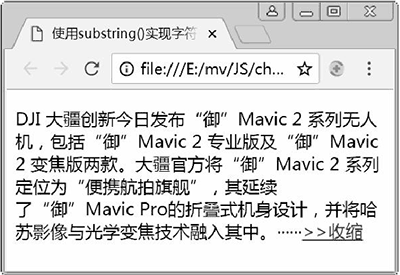
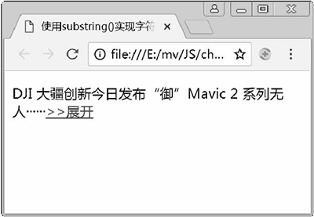

首页 > 编程笔记
JS字符串截取（3种方法）
JavaScript substring()、substr() 和 slice() 3 个方法功能类似，都可以截取字符串，但它们的参数含义有所不同。
substring() 用于提取并返回字符串索引值 startIndex 到 endIndex-1 之间的字符串。参数为负数时会看成 0。如果第一个参数为正数，第二个参数为负数，则两个参数会对调位置。如果 startIndex 比 endIndex 大，则在提取子串之前会先对调这两个参数。如果 startIndex 和 endIndex 相等，则返回空字符。如果只有一个 startIndex 参数，则返回字符串从 startIndex 位置开始到结尾之间所有字符串。
substring() 示例如下：
substr() 用于从 startIndex 位置开始向后面截取不超过 length 个字符。参数 startIndex 可以取正数或负数，为负数时，则该负数的绝对值表示字符串的倒数第几个字符，例如 -1 指最后一个字符，-2 指倒数第二个字符，以此类推。length 参数只能为非 0 正数，表示截取的字符个数，否则不能截取字符串；该参数可以省略，如果省略则表示从 startIndex 开始截取到字符串结尾的所有字符。
substr()示例如下：
slice() 用于截取并返回字符串索引值 startIndex 到 endIndex-1 之间的字符串。该方法和 substring() 的用法很类似，参数的含义除了两个参数都可以为负数以及第一个参数必须大于第二个参数外，其他和 subst ring() 的完全一样，故在此不再赘述。
slice() 示例如下：
下面使用 substring() 实现字符串的收缩和展开效果，具体代码如下所示。
【例 1】使用 substring() 实现字符串的收缩和展开。
1. substring() 方法
substring() 的用法为：str.substring( startIndex [,endIndex] )
substring() 用于提取并返回字符串索引值 startIndex 到 endIndex-1 之间的字符串。参数为负数时会看成 0。如果第一个参数为正数，第二个参数为负数，则两个参数会对调位置。如果 startIndex 比 endIndex 大，则在提取子串之前会先对调这两个参数。如果 startIndex 和 endIndex 相等，则返回空字符。如果只有一个 startIndex 参数，则返回字符串从 startIndex 位置开始到结尾之间所有字符串。
substring() 示例如下：
var oStr = "Hello,can I help you?"; alert(oStr.substring(6));//从第6个字符开始提取后面所有的字符，输出：can I help you? alert(oStr.substring(6,9));//提取第6～8之间的字符，输出：can alert(oStr.substring(9,6));//第二个参数大于第一个参数，截取字符串前先对调参数位置，输出：can alert(oStr.substring(2,-3));//将负数和正数对调，且将负数看成0，输出:He alert(oStr.substring(-2,-3));//两个参数都为负数，没有输出 alert(oStr.substring(-4));//将负数看成0，输出：Hello,can I help you?从上述示例可看出，substring() 必须至少有一个参数为正数，否则无结果输出。而且为负数的参数永远都只能作为第一个参数，且其值都会被看成 0。所以，substring(2,-3) 等效于 substring(0,2)，substring(-4) 等效于 substring(0)。另外，第二个参数大于第一个参数时，两个参数会对调位置，所以 substring(9,6) 等效于 substring(6,9)。
2. substr() 方法
substr() 的用法为：str.substr( startIndex [,length] )
substr() 用于从 startIndex 位置开始向后面截取不超过 length 个字符。参数 startIndex 可以取正数或负数，为负数时，则该负数的绝对值表示字符串的倒数第几个字符，例如 -1 指最后一个字符，-2 指倒数第二个字符，以此类推。length 参数只能为非 0 正数，表示截取的字符个数，否则不能截取字符串；该参数可以省略，如果省略则表示从 startIndex 开始截取到字符串结尾的所有字符。
substr()示例如下：
var str = "Hello,can I help you?"; alert(str.substr(-2,3));//从倒数第二个字符开始提取后面不超过3个字符的子串，输出：u? alert(str.substr(1,3));//从第二个字符开始提取后面不超过3个字符的子串，输出：ell alert(str.substr(1,-3));//length参数为负数，没有结果输出 alert(str.substr(6));//从第7个字符开始提取后面所有的字符，输出：can I help you?
3. slice() 方法
slice() 的用法为：str.slice( startIndex [,endIndex] )
slice() 用于截取并返回字符串索引值 startIndex 到 endIndex-1 之间的字符串。该方法和 substring() 的用法很类似，参数的含义除了两个参数都可以为负数以及第一个参数必须大于第二个参数外，其他和 subst ring() 的完全一样，故在此不再赘述。
slice() 示例如下：
var str = "Hello,can I help you?"; alert(str.slice(6));//从第6个字符开始提取后面所有字符，输出：can I help you? alert(str.slice(6,9));//提取从第6到第8个字符之间的所有字符，输出：can alert(str.slice(9,6));////第一个参数大于第二个参数，没有输出 alert(str.slice(2,-3));//从第三个字符开始提取到倒数第四个字符之间的所有字符,输出:llo,can I help y alert(str.slice(-4));//从倒数第四个字符开始提取后面所有字符，输出：you? alert(str.slice(-4,-1));//提取从倒数第四个字符开始到倒数第二个字符之间的所有字符，输出：you
下面使用 substring() 实现字符串的收缩和展开效果，具体代码如下所示。
【例 1】使用 substring() 实现字符串的收缩和展开。
<!doctype html>
<html>
<head>
<meta charset="utf-8">
<title>使用substring()实现字符串的收缩和展开</title>
<script>
window.onload = function(){
var oP = document.getElementsByTagName('p')[0];
var oSpan = document.getElementsByTagName('span')[0];
var oA = document.getElementsByTagName('a')[0];
var str = oSpan.innerHTML;
var onOff = true;
oA.onclick = function(){
if(onOff){
oSpan.innerHTML = str.substring(0,27);
oA.innerHTML = '>>展开';
}else{
oSpan.innerHTML = str;
oA.innerHTML = '>>收缩';
}
onOff = !onOff;
};
};
</script>
</head>
<body>
<p><span>DJI 大疆创新今日发布“御”Mavic 2 系列无人机，包括“御”Mavic 2 专业版及“御”Mavic 2 变
焦版两款。大疆官方将“御”Mavic 2 系列定位为“便携航拍旗舰”，其延续了“御”Mavic Pro的折叠式机身设计，
并将哈苏影像与光学变焦技术融入其中。</span>…<a href="javascript:;">>>收缩</a></p>
</body>
</html>
上述 JS 代码使用 substring() 来截取字符串作为收缩后的文本，使用 substr() 或 slice() 方法替换 substring() 得到的结果完全相同。上述代码在 Chrome 浏览器中的运行结果如图 1 和图 2 所示。

图 1：收缩前的效果
图 1：收缩前的效果

图 2：单击收缩链接后的效果
当单击图 2 中的展开链接后，界面又回到图 1 所示的效果。图 2：单击收缩链接后的效果
关注公众号「站长严长生」，在手机上阅读所有教程，随时随地都能学习。内含一款搜索神器，免费下载全网书籍和视频。

微信扫码关注公众号